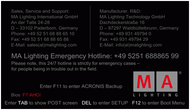
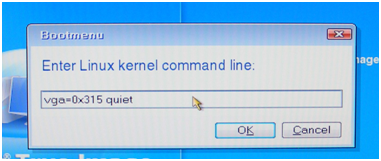
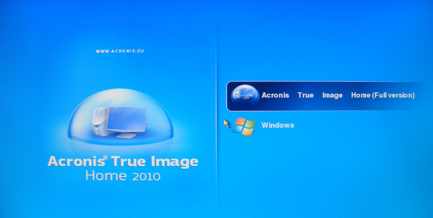

VPUs with serial numbers below # 86 are based on Windows Vista. Restart the machine and press F11 during Boot. This will lead you to the Acronis Start Menu. Press F11 again to open up a “Boot Menu” window to enter parameters:

Stood in January 2010, you have to force the graphic card to do 800x600 to work correct with the internal screen on a VPU Plus. Otherwise you will see graphical artefacts and not readable fonts!
On a VPU Basic it is not intended to put any Boot menu parameters into this line. If you pressed F11 and the Boot menu window comes up:

Enter this complete line (also written identical!) (only in Acronis 2010):
vga=0x315 quiet and press OK.
You will then be at the start screen of Acronis. Choose “Acronis True Image home” to proceed: Enter this complete line (also written identical!) (only in Acronis 2010): vga=0x315 quiet and press OK. You will then be at the start screen of Acronis. Choose “Acronis True Image home” to proceed:
